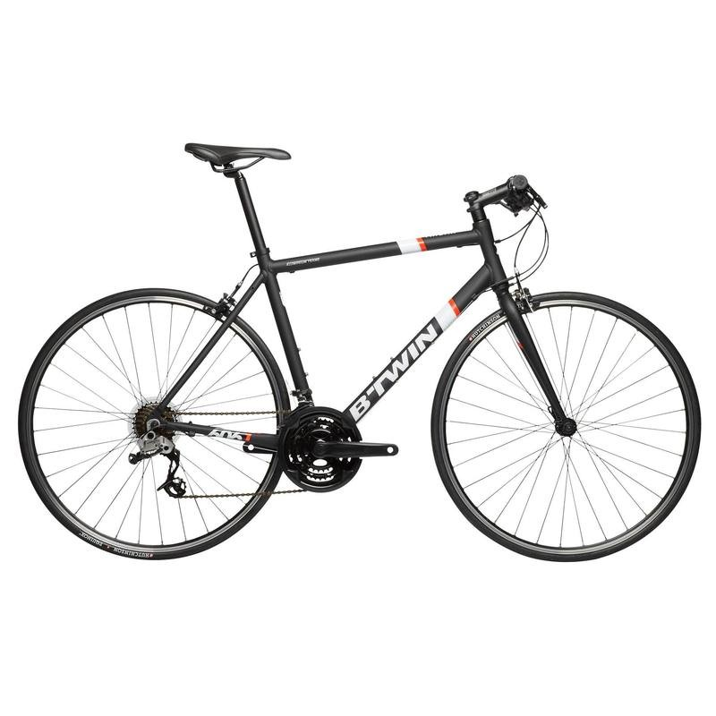

La bicicleta
El primer modelo de transmisión a través de una cadena (la bicicleta moderna) fue inventado en 1885 ,La primera bicicleta, fabricada con madera, se llamaba draisina porque la inventó Karl Drais en 1817. No tenía pedales: había que empujarla con los pies en el suelo. Un herrero escocés llamado Kirkpatrick Macmillan creó la primera máquina con pedales y dos ruedas en 1839. Sin embargo, esta rudimentaria bicicleta aún no tenía correa de transmisión.
En 1861, al francés Ernest Michaux se le ocurrió una original mejora: ubicar los pedales en la rueda delantera. No triunfó porque se necesitaba mucho equilibrio para manejarla, pero la idea de los pedales conectados a la rueda abrió el camino para llegar a la bicicleta tal y como la usamos actualmente. Para resolver el problema de la falta de equilibrio, en 1873, un inventor inglés llamado James Starley propuso una máquina con la rueda delantera mucho más grande que la trasera. En enero de 1887, el norteamericano Thomas Stevens comenzó el primer viaje en bicicleta alrededor del mundo. Partió de San Francisco y no llegaría hasta tres años después. Toda una aventura.
El nacimiento de la bicicleta moderna
Por fin, en 1885, aparece la Safety Bicycle (bicicleta de seguridad), inventada por John Kemp Starley. Tenía frenos, permitía una postura más natural y el ciclista estaba más cerca del suelo, por lo que las caídas no eran tan peligrosas. Después, se añadieron las ruedas con cámara de aire y la cadena de transmisión conectada a la rueda de atrás. Es la bicicleta moderna.
La bicicleta servía tanto para el campo como para la ciudad. Era un medio de transporte barato y accesible a cualquier persona. Además se puede arreglar con unos pocos conocimientos de mecánica. En Europa del norte, nunca ha dejado de utilizarse: países como Suiza, Alemania, los Países Bajos, algunas zonas de Polonia y los países escandinavos, y a pesar del frío y las malas condiciones meteorológicas, han sido siempre países defensores de este medio de transporte. También en China y la India ha sido durante años el principal medio de transporte.
